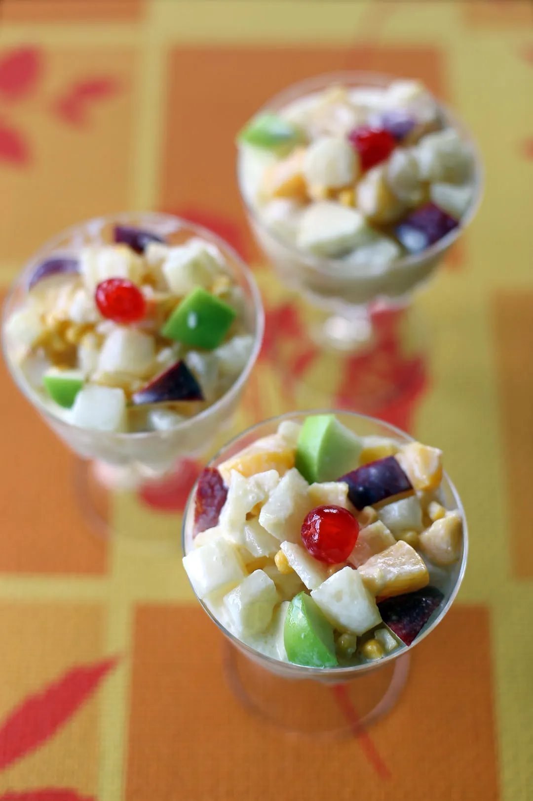

Fruit Salad

Pinoy Fruit Salad is a quick and easy dessert perfect for the warm
weather. This dish makes use of canned fruit cocktail, table cream, and
condensed milk. The mixture is chilled inside the fridge overnight before
serving, to get the best result.
Description
- 2 cans 30 oz. fruit cocktail
- 1 can 7.6 oz. table cream
- 7 oz. 1/2 can condensed milk
- 12 pieces maraschino cherries
Steps
-
Open the fruit cocktail and drain the syrup by pouring it on a colander.
Let the liquid drain totally (around 30 minutes).
-
Arrange the drained fruit cocktail in a mixing bowl. Add the table
cream, condensed milk, and maraschino cherries.
-
Gently fold the mixture until all the ingredients are well distributed.
Cover the mixing bowl with sling wrap then refrigerate overnight.
- Remove from the fridge and transfer to a serving bowl.
- Serve. Share and enjoy!